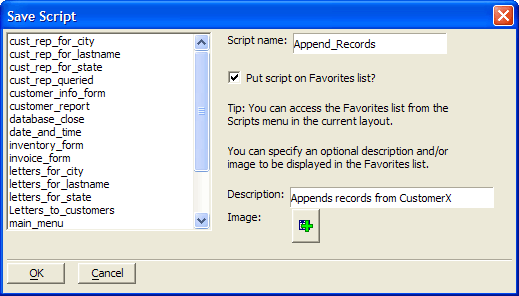

Viewing Xbasic Code Generated by a Procedure
Optionally, click Save to Clipboard so you can later paste the code into the Code Editor.
Optionally, click Save as Script, enter a Script name.
Optionally, check Put script on Favorites list?
Optionally, add a Description.
Optionally, click the Image button and select an image from the Insert Image Dialog Box.
Click OK to continue or Cancel to discard your inputs.

See Also
Manage Script Favorites Dialog Box